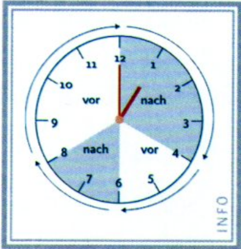

by Maverick
It was always so destined, that German will become part of my life.
Dedicated to all the foreigners here in Germany, trying to make sense out of this language.
— Saket Sinha
Gender Indentifications by Word Endings .
der die das
-el -age -tum -en -e -ment -er -ei -ium -ig -ie -um -ich -heit -chen -ling -keit -lein -schaft -ik -in -ion -tät -ung -ur
Gender of compound noun always the gender of the last noun.
Declension of “the” Articles
masculine feminine neutral plural
Nominative der die das die Accusative den die das die Dative dem der dem den Genitive des der des der
Declension of “a, an” Articles
masculine feminine neutral
Nominative ein eine ein Accusative einen ein ein Dative einem einer einem Genitive eines einer eines
der Mann geht.
ein Mann geht.
kein Mann geht.
die Frau kommt.
eine Frau kommt.
keine Frau kommt.
das Kind spielt.
ein Kind spielt.
kein Kind spielt.
die Kind spielt.
keine Kind spielt.
Ich fahre den Wagen.
Ich fahre einen Wagen.
Ich fahre keinen Wagen.
Ich kaufe die Uhr.
Ich kaufe ein Uhr.
Ich kaufe kein Uhr.
Ich lese das Buch.
Ich lese ein Buch.
Ich lese kein Buch.
Ich lese die Bücher.
Ich lese keine Bücher.
Ich kaufe essen für meinen Vater .
Ich reise ohne meinen Wagen .
Der Wagon fährt gegen ein Haus .
Ich macht nichts um die Umwelt .
Ich gehe den Weg entlang .
Ich schicke dem Vater nichts.
Ich schicke einem Vater nichts.
Ich schicke keinem Vater nichts.
Ich schicke der Mutter nichts.
Ich schicke einer Mutter nichts.
Ich schicke keiner Mutter nichts.
Ich schicke dem Kind nichts.
Ich schicke einem Kind nichts.
Ich schicke keinem Kind nichts.
Ich schicke den Kinder nichts.
Ich schicke keinen Kinder nichts
Mein Wagon ist bei meinem Haus .
Ich schlafe nach der Arbeit .
Ich lebe seit drei jahre in deisem Haus .
Ich bekomme einen Brief von der Arbeit .
Ich werde zu meinem Geburtstag eine Feier machen.
ich habe dem Leben gegenüber eine positive Einstellung.
Ottos Garten = der Garten von Otto
Es ist das Auto des Vater.
Es ist das Auto der Mutter.
Es ist das Auto des Kind.
Es ist das Auto der Kinder.
Anstatt seinem Vater kam seiner Mutter.
Trotz des Staus kamen wir rechtzeitig an.
Wir sprechen nicht während des Essen.
Er arbeitet nicht wegen der Krankheit.
Nominative Accusative Dative Possessive
ich mich mir mein du dich dir dein er ihn ihm sein es es ihm sein sie sie ihr ihr wir uns uns unser ihr euch euch euer sie sie ihnen ihr Sie Sie Ihnen Ihr
Accusative - Du sieht mich.
Dative - Du gibt es mir.
Possessive - Es ist mein Haus.
Accusative - Ich sehe dich.
Dative - Ich gebe es dir.
Possessive - Es ist dein Haus.
Accusative - Ich sehe ihn.
Dative - Ich gebe ihm dies.
Possessive - Es ist sein Haus.
Accusative - Ich sehe es.
Dative - Ich gebe ihm dies.
Possessive - Es ist sein Haus.
Accusative - Ich sehe sie.
Dative - Ich gebe ihr dies.
Possessive - Es ist ihr Haus.
Accusative - Ich sehe uns.
Dative - Ich gebe uns dies.
Possessive - Es ist unser Haus.
Accusative - Ich sehe euch.
Dative - Ich gebe euch dies.
Possessive - Es ist euer Haus.
Accusative - Ich sehe sie.
Dative - Ich gebe ihnen dies.
Possessive - Es ist ihr Haus.
Accusative - Ich sehe Sie.
Dative - Ich gebe Ihnen dies.
Possessive - Es ist Ihr Haus.
Prasens Prateritum
ich -e -te du -st -test er/es/sie -t -te ihr -t -tet wir/sie/Sie -en -ten
sprechen lesen treffen essen
ich spreche lese treffe esse du sprichst liest triffst isst er/es/sie spricht liest trifft isst ihr sprecht lest trefft esst wir/sie/Sie sprechen lesen treffen essen
ge-t -t ge-n trennbar
gelernt repariert gelesen angerufen gemacht trainiert geschlafen aufgeräumt gehort telephoniert gesehen eingekauft gespielt verkauft getrunken eingeladen gefragt verdient gegeben ferngesehen gesagt besucht gegessen eingeschlafen
ge-n trennbar
gekommen angekommen gefahren abgefahren gegangen eingesteigen geflohen aufgewachsen
können müssen wollen möchten dürfen sollen
ich kann muss will möchte darf soll du kannst musst willst möchtest darfst sollst er/es/sie kann muss will möchte darf soll ihr könnt müsst wollt möchtet dürft sollt wir/sie/Sie können müssen wollen möchten dürfen sollen
masculine feminine neutral
Nominative er e es Accusative en e es Dative em er em Genitive en er en
masculine feminine neutral
Nominative er e e Accusative en e e Dative em en en Genitive es en en

6:30 - halb sechs
9.45 - Viertel von zehn
3:20 - zwanzig nach drei
7:25 - funf vor halb acht
10:35 - funf nach halb zehn
Prepostition Zeit Bispeil
an (Dat) Wochenende am Deinstag / am Abend um Uhrzeit um drei Uhr in (Dat) Monat/Jahrzeiten im Juli/Summer von/bis Uhrzeit von 9 Uhr bis 10 Uhr vor (Dat) before Zeitpunkt von dem Kurs nach (Dat) After Zeitpunkt nach dem Kurs für (Akk) Zeitspanne für zwei Wochen
Prepostition Platz Bispeil
mit (Dat) Wie Ich fahre mit dem Taxi ohne (Akk)
Prepostition Platz Bispeil
aus Woher Ich komme aus Berlin in (Akk) Wo Ich wohne in Berlin nach Wohin Ich gehe nach Berlin bei (Dat) Wo Ich bin beim Training zu (Dat) Wohin Ich gehe zum Arzt
Prepostition Platz Bispeil Verb
auf/unter/nehmen Wohin Ich legt es auf den Tisch legen an Wohin Ich stelle es aus den Tisch stellen in Wohin Ich stecke es in die Geldbörse stecken an Wohin Ich hängen es an die Wand hängen
Prepostition Platz Bispeil Verb
auf/unter/nehmen Wo Es liegen auf dem Tisch liegen an Wo Es stehen an der Ecke stehen in Wo Es steckte im Schrank stecken an Wo Es hängen an die Wand hängen